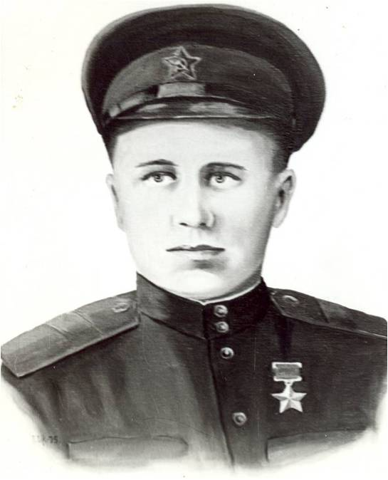

Кокшаров Иван Иванович
(06.09.1919 -04.07.2004)
Герой Советского Союза. Старший сержант. Родился в д. Большое Хавино Шонгско - Николаевской волости, впоследствии Емельяновского сельсовета Кичменгско-Городецкого района. В армию призван в 1939 году.
В Великой Отечественной войне начал участвовать с 23.06.1941 года. Когда началась война, подразделение И. Кокшарова занималось организацией подвоза военных грузов к фронту, а затем эвакуацией фабрик и заводов в тыл. Первое боевое крещение принял на озере Ильмень, когда уже началось освободительное наступление. Воевал на 3 Белорусском фронте в Тильзитском полку 235-й Витебской Краснознаменной ордена Суворова гвардейской дивизии. На линии Пиллау - Кенигсберг при обороне высоты погиб командир взвода и командование им взял на себя старший сержант И. Кокшаров и высоту удержал до прихода основных сил.
При штурме Кенигсберга полк штурмовал укрепления внешнего оборонительного пояса. В ходе уличных боев, когда погиб пулеметчик взвода, И. Кокшаров взял пулемет и косил им фашистов. Путь преграждали три пулеметных гнезда. Кокшаров И.И. стремительно пробрался к дотам и кинул в амбразуры гранаты, а потом ворвался в них с автоматом, довершив дело. Стрелковый батальон ворвался в город. Стремительной атакой наши бойцы преодолели два противотанковых три ряда колючей проволоки, речушку, но потом шквальный огонь фашистов прижал их к земле. Немцы в каменных домах, казалось, были неуязвимы. Надо было быстро искать выход из положения. И тогда Иван Кокшаров вскочил на ноги, швырнул гранату под окна дома и ринулся к месту взрыва. Другие гранаты кинул в окна и под дверь. Он ворвался в дом и за ним ринулись и бойцы его отделения. Был ранен, но отделение не оставил, и продолжать командовать им. Раненый тяжело 6 апреля в третий раз, Кокшаров И.И. попал в госпиталь, где и встретил День Победы.
Указом Президиума Верховного Совета СССР от 19.04.1945 года ему было присвоено звание Героя Советского Союза. Награду получил в Кремле в сентябре 1945 года. В 1970 году, когда отмечалось 25-летие взятия Кенигсберга, И. Кокшаров побывал в Калининграде на месте боя в апреле 1945 года. На установленной мемориальной плите на месте дзота, золотыми буквами гласит надпись: «В бою за район Шарлоттенбург (Северная часть Калининграда) Герой Советского Союза гвардии старший сержант Иван Иванович Кокшаров уничтожил 3 пулемета и 38 гитлеровцев, обеспечив успех всего батальона».
После войны жил в г. Калинине, ныне Тверь. Работал на вагоностроительном заводе в должности инженера-конструктора. За войну пять раз был ранен, два осколка так остались в теле. В апреле 1983 года приезжал на открытие районного краеведческого музея. Умер в г. Тверь. В Кичменгском Городке одна из улиц носит его имя.
В Великой Отечественной войне начал участвовать с 23.06.1941 года. Когда началась война, подразделение И. Кокшарова занималось организацией подвоза военных грузов к фронту, а затем эвакуацией фабрик и заводов в тыл. Первое боевое крещение принял на озере Ильмень, когда уже началось освободительное наступление. Воевал на 3 Белорусском фронте в Тильзитском полку 235-й Витебской Краснознаменной ордена Суворова гвардейской дивизии. На линии Пиллау - Кенигсберг при обороне высоты погиб командир взвода и командование им взял на себя старший сержант И. Кокшаров и высоту удержал до прихода основных сил.
При штурме Кенигсберга полк штурмовал укрепления внешнего оборонительного пояса. В ходе уличных боев, когда погиб пулеметчик взвода, И. Кокшаров взял пулемет и косил им фашистов. Путь преграждали три пулеметных гнезда. Кокшаров И.И. стремительно пробрался к дотам и кинул в амбразуры гранаты, а потом ворвался в них с автоматом, довершив дело. Стрелковый батальон ворвался в город. Стремительной атакой наши бойцы преодолели два противотанковых три ряда колючей проволоки, речушку, но потом шквальный огонь фашистов прижал их к земле. Немцы в каменных домах, казалось, были неуязвимы. Надо было быстро искать выход из положения. И тогда Иван Кокшаров вскочил на ноги, швырнул гранату под окна дома и ринулся к месту взрыва. Другие гранаты кинул в окна и под дверь. Он ворвался в дом и за ним ринулись и бойцы его отделения. Был ранен, но отделение не оставил, и продолжать командовать им. Раненый тяжело 6 апреля в третий раз, Кокшаров И.И. попал в госпиталь, где и встретил День Победы.
Указом Президиума Верховного Совета СССР от 19.04.1945 года ему было присвоено звание Героя Советского Союза. Награду получил в Кремле в сентябре 1945 года. В 1970 году, когда отмечалось 25-летие взятия Кенигсберга, И. Кокшаров побывал в Калининграде на месте боя в апреле 1945 года. На установленной мемориальной плите на месте дзота, золотыми буквами гласит надпись: «В бою за район Шарлоттенбург (Северная часть Калининграда) Герой Советского Союза гвардии старший сержант Иван Иванович Кокшаров уничтожил 3 пулемета и 38 гитлеровцев, обеспечив успех всего батальона».
После войны жил в г. Калинине, ныне Тверь. Работал на вагоностроительном заводе в должности инженера-конструктора. За войну пять раз был ранен, два осколка так остались в теле. В апреле 1983 года приезжал на открытие районного краеведческого музея. Умер в г. Тверь. В Кичменгском Городке одна из улиц носит его имя.